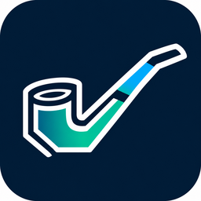
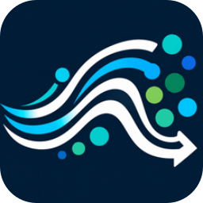
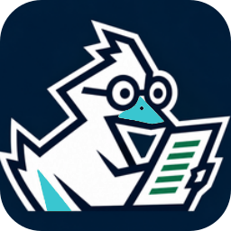

LIMSMan
Laboratory information management system
Track samples, inventory, batches and laboratory results with role-based review.
Monthly price: Pricing to be confirmed
Learn moreScientific software, made practical
Focused software for laboratory workflows, scientific documentation, analysis and management — without unnecessary complexity.
Six specialist apps. Individual subscriptions planned.

MethPipeMethod validation pipeline management
GoFloFlow cytometry analysis
DuckManDuckument managementGenuine application icons · Public website preview
Explore the applications
Choose just the software you need. Each application has a dedicated workspace and purpose.
Laboratory information management system
Track samples, inventory, batches and laboratory results with role-based review.
Eeletronic lab notebook
Record experiments, revisit versions and organise scientific documentation.
Training & qualification management
Assign training, track qualifications and maintain competency records.
Method validation pipeline management
Organise methods, validation activities and review access.
Flow cytometry analysis
Explore FCS data with flexible plots, gating and analysis reports.
Duckument management
Control document versions, reviews, approvals and release histories.
How DuckBio is designed to work
The planned self-service customer journey is intentionally simple.
Compare the six applications and find the right fit.
One seven-day trial covering all six apps, with no payment details required. Coming later.
Choose individual monthly subscriptions and manage billing online. Coming later.
The DuckBio ecosystem
Our applications focus on individual scientific jobs rather than squeezing every workflow into one oversized interface.
Questions
A single seven-day free trial across all six apps is planned. Registration and trial activation are not yet available.
Yes. The intended subscription model supports individual applications. Checkout is not live yet.
No mandatory demonstration or sales meeting is planned. Product media will be added as verified material becomes available.
Start with an application overview and explore specific capabilities.